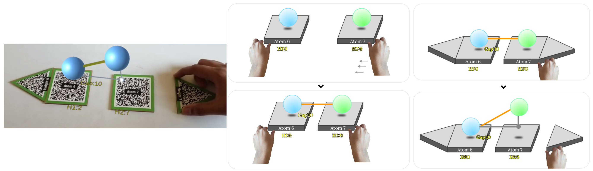

Explanation of Triclinic lattice structure using 2 atoms
Description:
Here we try to understand how using 2 atom markers, the bonds between 2 atoms can be in a triclinic
structure. Here we
modify two parameters: distance between the atoms and height of each atom.
Created by: Anurag Kumar Singh
Email: anurag27k@gmail.com
Date created: 27 May 2022
Version: 1.0
Created by: Anurag Kumar Singh
Email: anurag27k@gmail.com
Date created: 27 May 2022
Version: 1.0
Code files:
Prototype41.cs ↓
Prototype42.cs ↓
Other files:
QR31-34 markers ↓
Prerequisites:
How to Create Image Targets: YouTube Link 🔗
Steps:
1. Add the below markers in the Assets folder:
- Height6(QR31)
- Atom6(QR32)
- Atom7(QR33)
- Height7(QR34)

2. Create 4 Image Targets : Vuforia Engine>Image Target

3. Add a sphere under Atom6 and Atom7

4. Create a new material in Assets folder

5. Add material to the spheres created
6. Resize the spheres Atom6 and Atom7

7. Add box collider to the Atom6 and Atom7 and adjust values

8. Create empty objects under Height6 and Height7 markers

9. Create empty objects under Atom6 and Atom7 markers

10. Add the script Prototype41.cs and Prototype42.cs (mentioned above) to the assets folder
11. Drag Prototype41.cs to Atom6 and Prototype42.cs to Atom7
12.Add event trackers in QR31 -> QR34 in this manner

13.Add TextMeshPro from 3D objects. TEXT1 and TEXT3 under Atom6 and TEXT2 under Atom7.

14.Add Spheres under Atom6 and Atom7

15. Press Play and it should work!
In here we have 2 types of markers, atom marker and height marker. When the atom markers are brought closer, a bond forms between them. There is also a visual indicator of how far aretheatoms.Eachoftheatommarkerhasaheightmarker attached to it. The farther the atom marker goes from its height marker, the higher the position of the atom will be. The same is depicted in the image. The heights of the atoms are also displayed visually. This kind of freedom is required for triclinic lattice structure where all the angles (alpha, beta andgamma)and the lengths of the bonds (a,b,c) are different.

In the above feature we have observed the interactions:
- Atom Markers form a bond when in vicinity
- Heights of the atoms can beadjustedusingseparate markers acting as controllers.
Created by:
Anurag Kumar Singh
anurag27k@gmail.com
Chennai, India